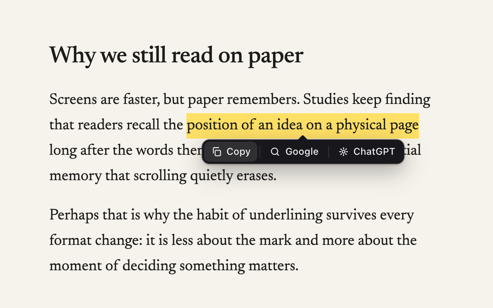

Almost every time you select text you are about to copy it or look it up. Snipbar puts a tiny bar right under the selection with exactly those actions: copy, search, or ask ChatGPT. On every site, with no menus in between.

No right-click menu, no keyboard chord to remember, no popup to open. The bar appears when a selection exists and disappears the moment it does not.
One click puts the selection on your clipboard and the button says Copied for a beat before the bar gets out of the way. Works in textareas and inputs too.
Opens the selection as a search in a new tab. Google by default. Swap it for DuckDuckGo, Bing or Brave from the toolbar popup and the button relabels itself.
Sends the selection straight into ChatGPT as a prompt via chatgpt.com/?q=, so the answer is loading before you have switched tabs. Claude and Perplexity are one setting away.
The Chrome Web Store listing is not up yet. Loading it unpacked takes four steps and works in Chrome, Edge, Brave and Arc.
chrome://extensions and switch on Developer mode in the top right corner.Load unpacked and choose the unzipped folder. Snipbar appears in the list.